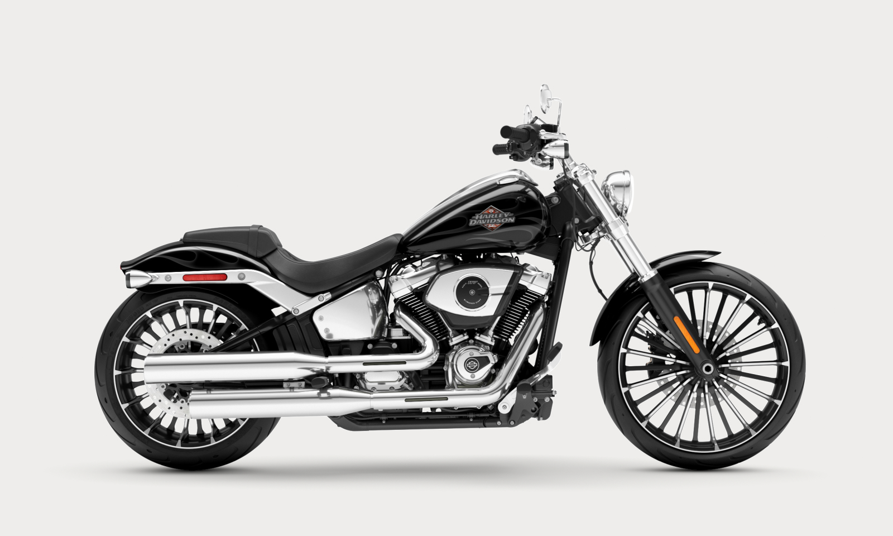
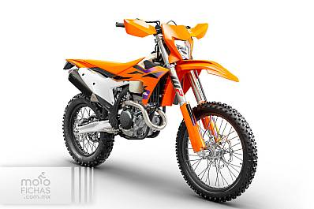
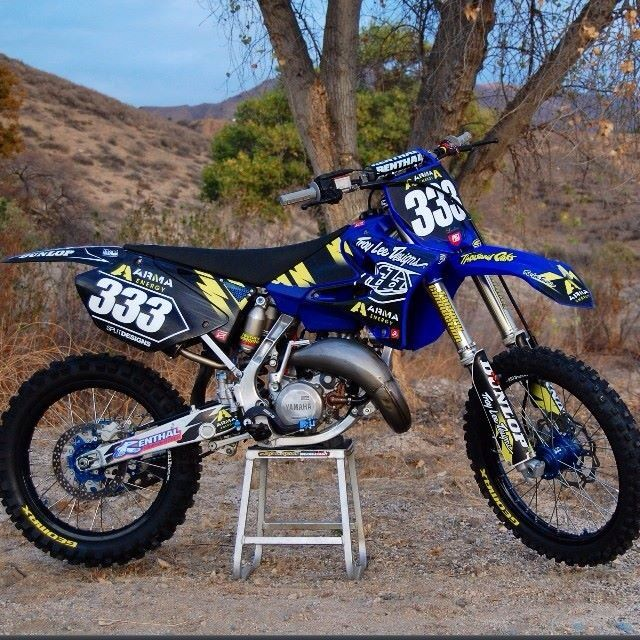
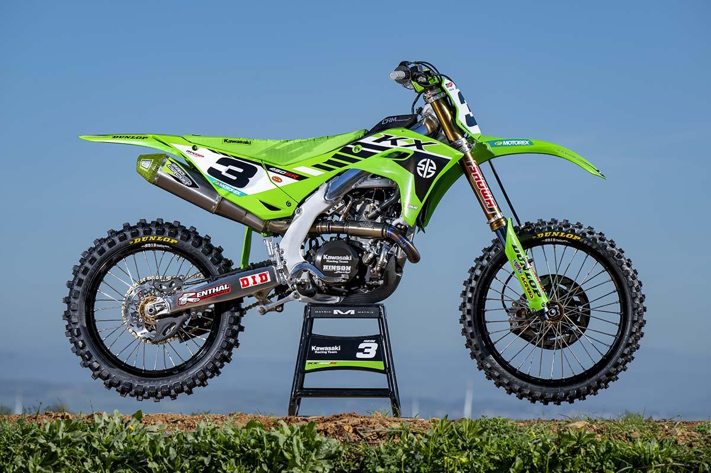
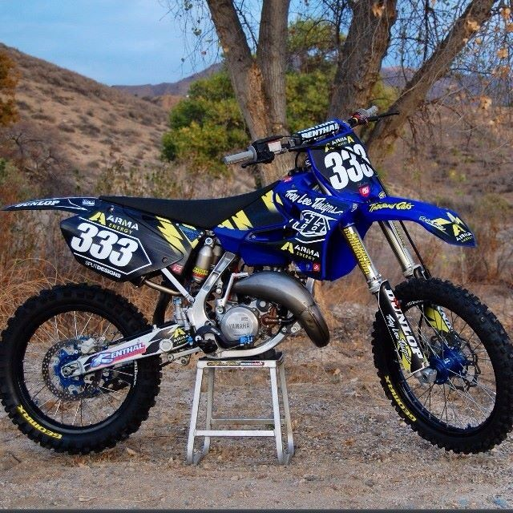
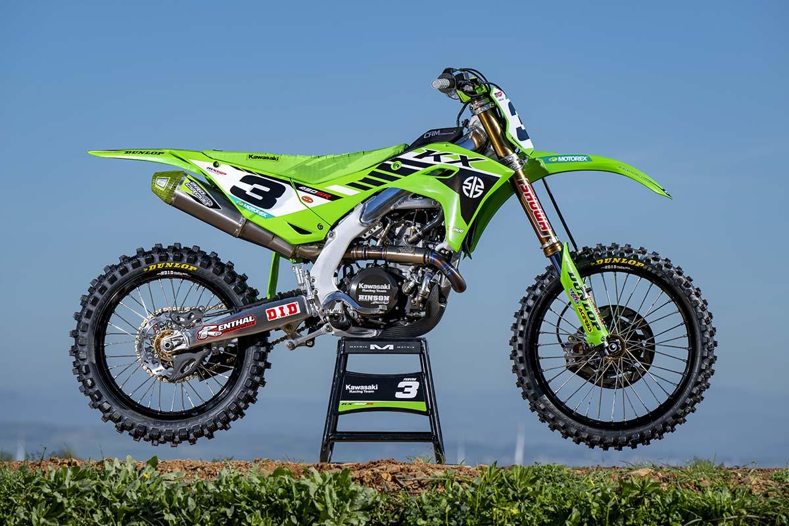

Bienvenido a TI-BIKERSZ
Descubre la pasión por las dos ruedas y explora los diferentes tipos de motocicletas que existen.
Motos Deportivas

Las motos deportivas están diseñadas para velocidad y rendimiento en pista. Con su aerodinámica avanzada y potentes motores, estas máquinas son la elección perfecta para los amantes de la adrenalina.
- Alta velocidad
- Tecnología avanzada
- Aerodinámica optimizada
- Alta eficiencia
Motos Crucero
Las motos crucero ofrecen comodidad para largos viajes en carretera. Con su estilo clásico y posición de conducción relajada, estas motos son ideales para disfrutar del paisaje y la libertad de la carretera.
- Asiento cómodo
- Gran autonomía
- Capacidad de carga
Motos Enduro
Las motos enduro están diseñadas para off-road y aventuras todo terreno. Con su suspensión de largo recorrido y neumáticos todoterreno, estas motos pueden enfrentarse a cualquier tipo de terreno.
- Capacidad todo terreno
- Ligeras y ágiles
- Versatilidad en carretera y fuera de ella
Galería de Imágenes
 



Contacto
Sobre Nosotros
Somos un grupo de amantes de las motos y la pasión por el deporte que nos une. Nuestro objetivo es brindar a todos nuestros clientes la mejor experiencia y asegurarles que las motos son un juego de elegancia y entretenimiento.